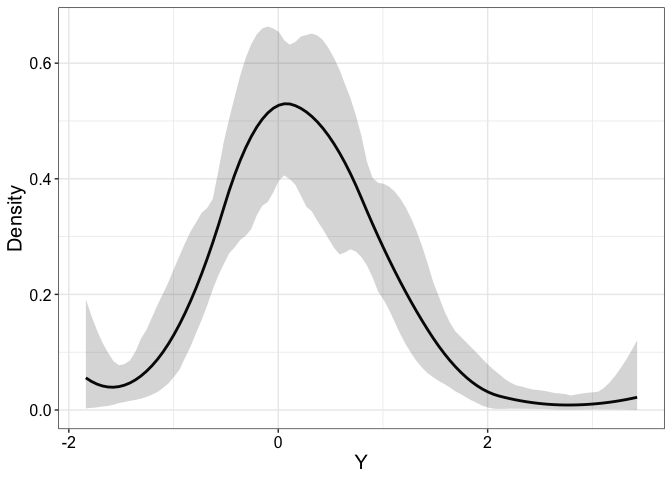

The SPQR R package implements the semi-parametric quantile regression (SPQR) method in Xu and Reich (2021) [1]. It allows flexible modeling of the conditional distribution function and quantile function. The package provides three estimation procedures: maximum likelihood estimation (MLE) and maximum a posteriori (MAP) which are point estimates but computationally lighter, and Markov chain Monte Carlo (MCMC) which is fully Bayesian but computationally heavier. The MLE and MAP estimates are obtained using the Adam routine in torch, whereas the MCMC estimate is obtained using Stan-like Hamiltonian Monte Carlo (HMC) and no-U-turn sampler (NUTS).
Installation
You can install the development version of SPQR from GitHub with:
# install.packages("devtools")
devtools::install_github("reetamm/SPQR")Example
Estimate normal mixture distribution:
library(SPQR)
set.seed(919)
n <- 200
X <- rbinom(n, 1, 0.5)
Y <- rnorm(n, X, 0.8)
control <- list(iter = 300, warmup = 200, thin = 1)
fit <- SPQR(X = X, Y = Y, method = "MCMC", control = control, normalize = TRUE, verbose = FALSE)
## summarize output
print(fit, showModel = TRUE)
#>
#> SPQR fitted using MCMC approach with ARD prior🚀
#>
#> Model specification:
#> Layers
#> Input Output Activation
#> 1 10 tanh
#> 10 10 softmax
#>
#> MCMC diagnostics:
#> Final acceptance ratio is 0.90 and target is 0.9
#>
#> Expected log pointwise predictive density (elpd) estimates:
#> elpd.LOO = 89.90853, elpd.WAIC = 89.7359
#>
#> Elapsed time: 0.03 minutes
## plot estimated PDF with 95% credible bands
plotEstimator(fit, type = "PDF", X = 0, ci.level = 0.95)
References
[1] Xu, S.G. and Reich, B.J., 2021. Bayesian nonparametric quantile process regression and estimation of marginal quantile effects. Biometrics.